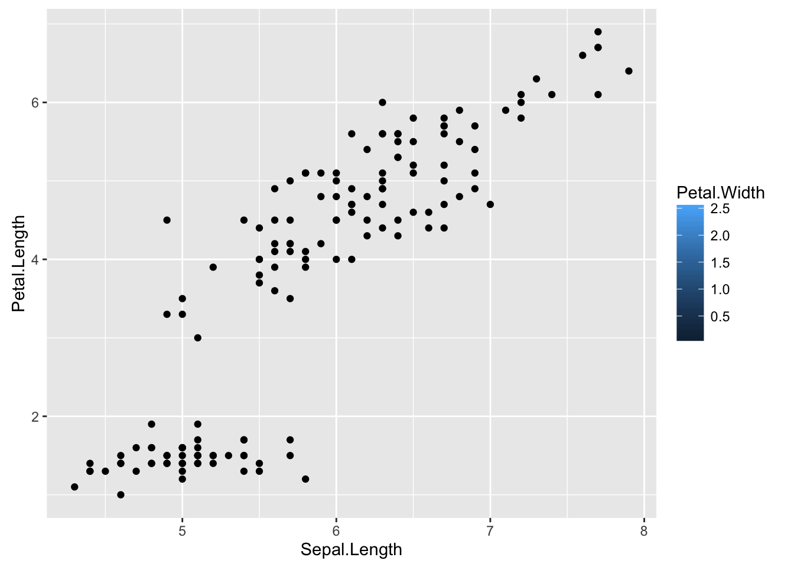
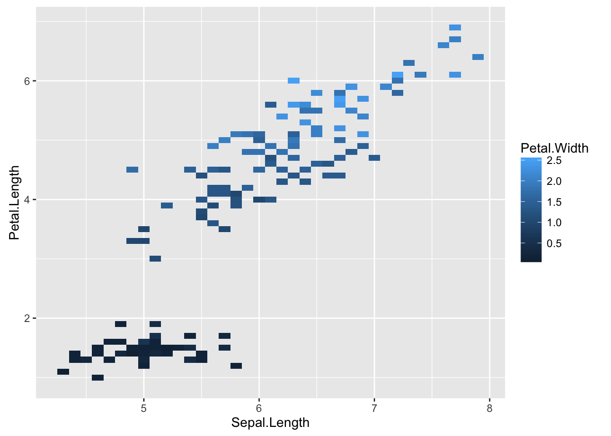
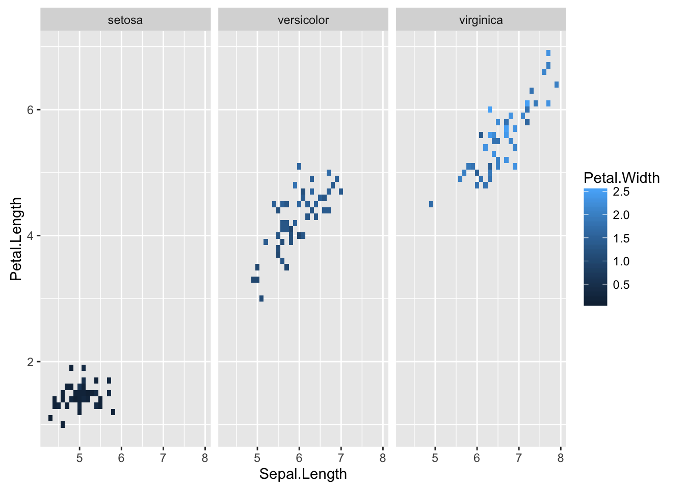

Les bubble charts sont très courant utilisés. Les différents paramètres permettent de représenter plusieurs variables:
library(ggplot2)
ggplot(iris, aes(Sepal.Length, Petal.Length, fill = Petal.Width)) + geom_point()
p=ggplot(iris, aes(Sepal.Length, Petal.Length, fill = Petal.Width)) + geom_tile()
p
Utilisation des facettes de ggplot2
p+ facet_wrap(~ Species)
Les graphiques 3D permettent de rajouter un axe en plus, pour visualiser les données dans l’espace.
Les packages threejs, plotly permettent de réaliser des graphiques interactifs en 3D.
library(threejs)
scatterplot3js(iris$Petal.Width, iris$Sepal.Length, iris$Sepal.Width,color=c("black","steelblue","red")[unclass(iris$Species)])Copyright © 2016 DatavISUP